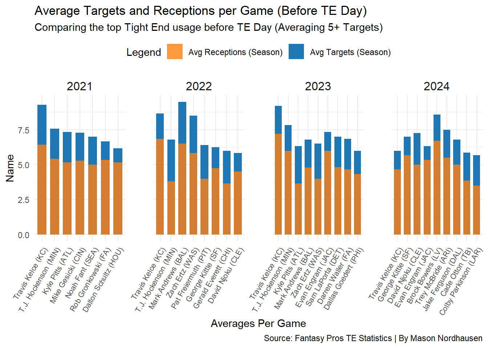
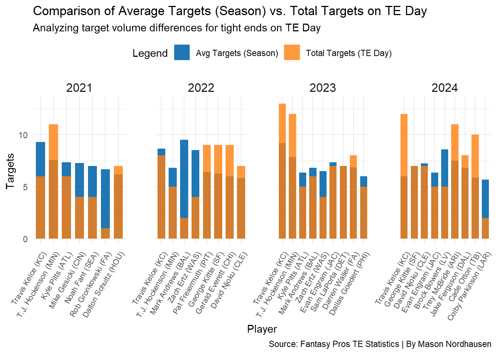
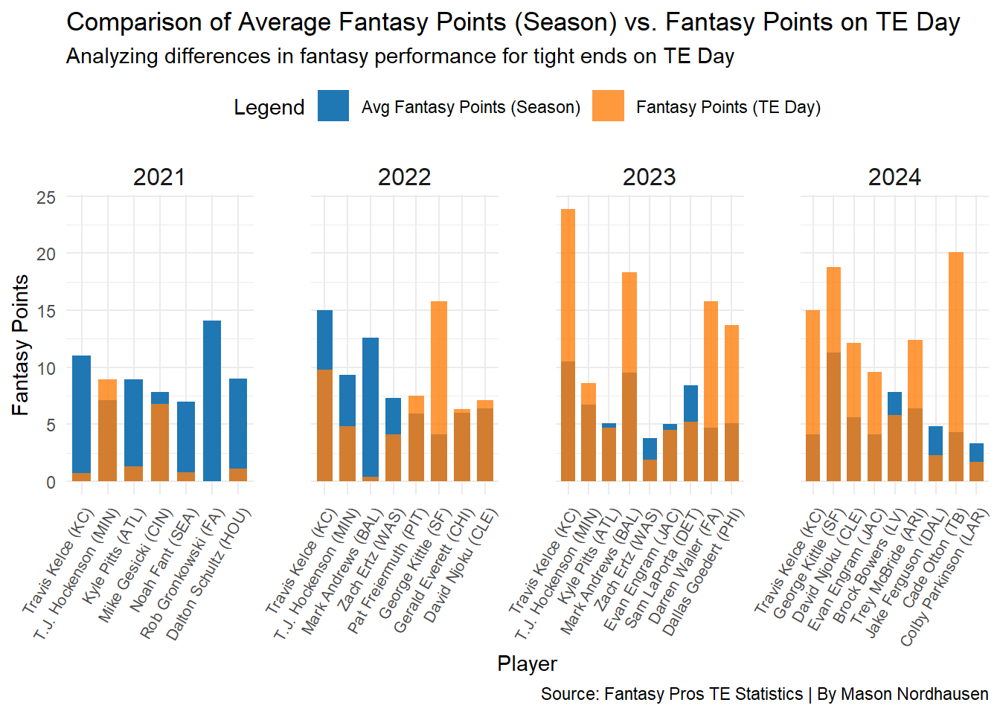
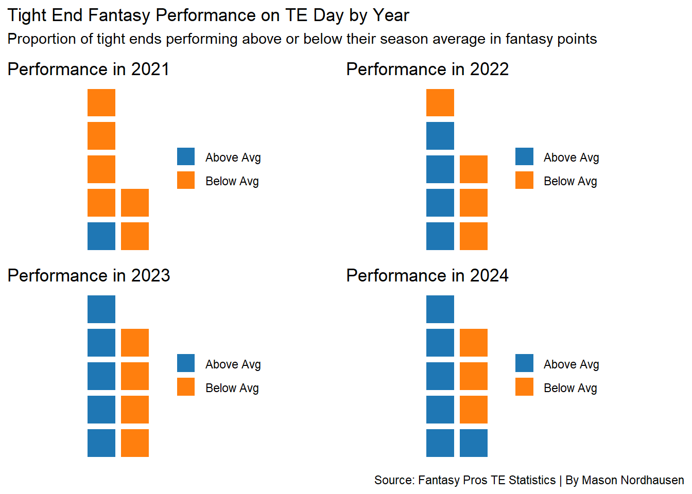

Rows: 557 Columns: 14
── Column specification ────────────────────────────────────────────────────────
Delimiter: ","
chr (2): Player, ROST
dbl (12): Rank, REC, TGT, YDS, Y/R, LG, 20+, TD, G, FPTS, FPTS/G, Year
ℹ Use `spec()` to retrieve the full column specification for this data.
ℹ Specify the column types or set `show_col_types = FALSE` to quiet this message.
Rows: 414 Columns: 14
── Column specification ────────────────────────────────────────────────────────
Delimiter: ","
chr (2): Player, ROST
dbl (12): Rank, REC, TGT, YDS, Y/R, LG, 20+, TD, G, FPTS, FPTS/G, Year
ℹ Use `spec()` to retrieve the full column specification for this data.
ℹ Specify the column types or set `show_col_types = FALSE` to quiet this message.
Code
TEStatsYear_top10 <- TEStatsYear %>%group_by(Year) %>%mutate(Avg_TGT_per_Game = TGT / G) %>%slice_max(order_by = Avg_TGT_per_Game, n =10) %>%# Select the top 10 playersungroup()# Join with TEDayStats based on player names and yearsTEComparison <- TEStatsYear_top10 %>%inner_join(TEDayStats, by =c("Player", "Year"), suffix =c("_avg", "_day"))# Calculate average targets and receptions per gameTEComparison <- TEComparison %>%mutate(Avg_TGT_per_Game = TGT_avg / G_avg,Avg_REC_per_Game = REC_avg / G_avg )TEComparison <- TEComparison %>%arrange(Year, -Avg_TGT_per_Game) %>%mutate(Player =factor(Player, levels =unique(Player)))#view(TEComparison)#|include: FALSE
In today’s NFL, quarterbacks and star wide receivers often steal the show, leaving the crucial yet under appreciated work of tight ends in the shadows. Tight ends are asked to block like offensive linemen, catch passes like wide-outs, and adapt to every situation, yet their efforts frequently go unnoticed. That changed in 2018 when George Kittle and his fellow 49ers humorously introduced “National Tight Ends Day,” a celebration that has since become a widely recognized event in the league. But beyond the festivities and social media buzz, a question remains: Does the attention surrounding TE Day translate into heightened performance on the field? Do tight ends rise to the occasion when they’re celebrated, or is it all just hype?
In this article, we break down the numbers—analyzing targets, receptions, and fantasy points from 2021 to 2024—to determine if TE Day truly impacts player performance or if it’s simply a fun distraction for fans.
To set the stage for this analysis, let’s first examine how tight ends have performed on average during the regular season, before TE Day, over the past four years. The chart below, Average Targets and Receptions per Game (Before TE Day), provides a comprehensive view of the top tight ends’ usage, showcasing their average targets and receptions per game for each year from 2021 to 2024. By separating the data year by year, we can see how consistently these elite tight ends, averaging five or more targets per game, have been utilized in their respective offenses and identify any noticeable trends or shifts in performance.
Code
TEComparison <- TEComparison %>%arrange(Year, -Avg_TGT_per_Game) %>%mutate(Player =factor(Player, levels =unique(Player)))#Remove Dallas, bye weekTEComparison <- TEComparison %>%filter(!(Player =="Dallas Goedert (PHI)"& Year ==2024))plot1 <-ggplot(TEComparison, aes(x = Player)) +geom_bar(aes(y = Avg_TGT_per_Game, fill ="Avg Targets (Season)"), stat ="identity", position ="dodge", width =0.7) +geom_bar(aes(y = Avg_REC_per_Game, fill ="Avg Receptions (Season)"), stat ="identity", position ="dodge", width =0.7, alpha =0.8) +labs(x ="Averages Per Game", y ="Name", title ="Average Targets and Receptions per Game (Before TE Day)", subtitle ="Comparing the top Tight End usage before TE Day", caption ="Source: Fantasy Pros TE Statistics | By Mason Nordhausen" ) +scale_fill_manual(name ="Legend", values =c("Avg Targets (Season)"="#1f77b4", "Avg Receptions (Season)"="#ff7f0e"),labels =c("Avg Receptions (Season)", "Avg Targets (Season)") ) +theme_minimal() +theme(axis.text.x =element_text(angle =60, hjust =1, size =8), strip.text =element_text(size =12), panel.spacing =unit(2, "lines"),legend.position ="top" ) +facet_wrap(~ Year, scales ="free_x", nrow =1)plot1

In our initial analysis, we observed that the top tight ends in the league typically receive around six targets per game, converting a high percentage of those opportunities into receptions. This consistent baseline gives us a solid reference point to evaluate any variations that might occur during the highly anticipated National Tight Ends Day.
Now, let’s explore whether the increased attention and excitement surrounding TE Day translate into a boost in target volume for these players. Specifically, we compare their average targets per game over the season to the total targets they received on TE Day. By doing so, we aim to understand if this special day results in increased usage or if the hype has minimal impact on their actual performance.
Code
TEComparison <- TEComparison %>%arrange(Year, -Avg_TGT_per_Game) %>%mutate(Player =factor(Player, levels =unique(Player)))# Create a plot to compare Avg Targets per Game (Season) to Total Targets on TE Dayplot2 <-ggplot(TEComparison, aes(x = Player)) +geom_bar(aes(y = Avg_TGT_per_Game, fill ="Avg Targets (Season)"), stat ="identity", position ="dodge", width =0.7) +geom_bar(aes(y = TGT_day, fill ="Total Targets (TE Day)"), stat ="identity", position ="dodge", width =0.7, alpha =0.8) +labs(x ="Player", y ="Targets", title ="Comparison of Average Targets (Season) vs. Total Targets on TE Day", subtitle ="Analyzing target volume differences for tight ends on TE Day", caption ="Source: Fantasy Pros TE Statistics | By Mason Nordhausen" ) +scale_fill_manual(name ="Legend", values =c("Avg Targets (Season)"="#1f77b4", "Total Targets (TE Day)"="#ff7f0e"),labels =c("Avg Targets (Season)", "Total Targets (TE Day)") ) +theme_minimal() +theme(axis.text.x =element_text(angle =60, hjust =1, size =8), strip.text =element_text(size =12), panel.spacing =unit(2, "lines"),legend.position ="top" ) +facet_wrap(~ Year, scales ="free_x", nrow =1)plot2

As expected, certain big names like Travis Kelce in 2021 and 2024, along with Mark Andrews in 2023, show a significant increase in targets on TE Day compared to their season averages. This suggests that the hype and attention around TE Day can influence game plans, with teams opting to heavily feature their star tight ends when the spotlight is on. It’s clear that for these elite players, TE Day provides an opportunity to shine, and their teams often rise to the occasion by involving them more in the offense.
However, this isn’t the case for every tight end. A striking example is Mark Andrews in 2022, who experienced a dramatic drop-off. Despite averaging nearly 10 targets per game that season, he only managed to see two targets on TE Day. This drop in usage highlights that TE Day does not always affect the game for every team. Game-specific factors like the defensive matchups, injuries, or defensive game plans specifically designed to neutralize star tight ends can play a significant role.
Another trend worth noting is the shift in how consistent target volumes have become over the years. In 2023 and 2024, the targets for most tight ends are much closer to their season averages, showing less extreme variability compared to 2021 and 2022. This could indicate a shift in how teams approach TE Day, perhaps with a more balanced and predictable offensive strategy rather than heavily adjusting their game plan. As TE Day has become more ingrained in the NFL culture, it’s possible that teams have found ways to celebrate their tight ends without dramatically altering their usual offensive patterns.
Building on the patterns we’ve observed in target volume, the next step is to understand how these changes translate into fantasy performance. While an increase in targets can suggest greater opportunities for tight ends, it doesn’t always guarantee higher fantasy points. To explore this, we’ll compare each tight end’s average fantasy points per game over the season with the fantasy points they scored on TE Day.
Code
# Use backticks to reference the column name with special charactersplot3 <-ggplot(TEComparison, aes(x = Player)) +geom_bar(aes(y =`FPTS/G_avg`, fill ="Avg Fantasy Points (Season)"), stat ="identity", position ="dodge", width =0.7) +geom_bar(aes(y = FPTS_day, fill ="Fantasy Points (TE Day)"), stat ="identity", position ="dodge", width =0.7, alpha =0.8) +labs(x ="Player", y ="Fantasy Points", title ="Comparison of Average Fantasy Points (Season) vs. Fantasy Points on TE Day", subtitle ="Analyzing differences in fantasy performance for tight ends on TE Day", caption ="Source: Fantasy Pros TE Statistics | By Mason Nordhausen" ) +scale_fill_manual(name ="Legend", values =c("Avg Fantasy Points (Season)"="#1f77b4", "Fantasy Points (TE Day)"="#ff7f0e"),labels =c("Avg Fantasy Points (Season)", "Fantasy Points (TE Day)") ) +theme_minimal() +theme(axis.text.x =element_text(angle =60, hjust =1, size =8), strip.text =element_text(size =12), panel.spacing =unit(2, "lines"),legend.position ="top" ) +facet_wrap(~ Year, scales ="free_x", nrow =1)plot3

In 2023 and 2024, we observe that tight ends generally performed better on National Tight Ends Day compared to their season averages, often by a significant margin. Interestingly, even though many tight ends did not see a substantial increase in target volume, it didn’t mean they weren’t heavily utilized. It’s possible that they were targeted in high-value situations, such as the red zone, which would increase their opportunities to score touchdowns and boost their fantasy points. This strategic usage highlights that even without a spike in overall targets, tight ends can still deliver impactful fantasy performances.
Conversely, 2021 and 2022 tell a different story. In these years, tight ends, for the most part, did not perform as well as they had in previous games that season. The data shows little to no correlation between TE Day and improved fantasy performance. Even when some players received a decent volume of targets, those opportunities did not always translate into receptions or touchdowns, both of which are crucial for maximizing fantasy points. This indicates that despite the extra attention surrounding TE Day, it doesn’t always guarantee better outcomes on the fantasy scoreboard.
The following waffle charts break down the proportion of tight ends who performed above or below their season average in fantasy points on TE Day for each year. This comparison gives us a clearer sense of how TE Day impacts tight end performance across seasons, highlighting whether the celebration truly boosts fantasy outcomes or if the results remain unpredictable.
Code
create_waffle_chart <-function(year) { data_year <- TEComparison %>%filter(Year == year) above_avg <-sum(data_year$FPTS_day > data_year$`FPTS/G_avg`) below_avg <-sum(data_year$FPTS_day <= data_year$`FPTS/G_avg`) waffle_data <-c("Above Avg"= above_avg, "Below Avg"= below_avg) waffle_plot <-waffle(waffle_data, rows =5, colors =c("#1f77b4", "#ff7f0e"))ggplot() +annotation_custom(ggplotGrob(waffle_plot), xmin =-Inf, xmax =Inf, ymin =-Inf, ymax =Inf) +labs(title =paste("Performance in", year),x =NULL,y =NULL ) +theme_void()}waffle_2021 <-create_waffle_chart(2021)waffle_2022 <-create_waffle_chart(2022)waffle_2023 <-create_waffle_chart(2023)waffle_2024 <-create_waffle_chart(2024)waffle_combined <- (waffle_2021 + waffle_2022) / (waffle_2023 + waffle_2024) +plot_annotation(title ="Tight End Fantasy Performance on TE Day by Year",subtitle ="Proportion of tight ends performing above or below their season average in fantasy points",caption ="Source: Fantasy Pros TE Statistics | By Mason Nordhausen" )waffle_combined

In 2021 and 2022, a striking pattern emerges: a larger proportion of tight ends fell short of their season average in fantasy points on TE Day. This under performance is especially pronounced in 2021, where only one tight end managed to exceed their average fantasy output. This suggests that TE Day in these years did not provide the expected boost in production, even for some of the top-performing players.
In contrast, the waffle charts for 2023 and 2024 paint a more favorable picture. More than half of the tight ends who averaged over five targets per game during the season were able to outperform their usual fantasy points on TE Day. This improvement suggests that teams may have started to use their tight ends more effectively in these years, particularly in high-value scenarios like red zone opportunities. In fact, 2024 saw a record-breaking number of touchdowns scored by tight ends , underscoring the strategic emphasis on these players. The consistent involvement of these key players allowed them to make a more significant impact and contribute to game-changing plays.
Ultimately, while TE Day has shown the potential to boost fantasy performance for certain elite players, it remains unpredictable and varies from year to year. For fantasy football managers, this means TE Day can offer great upside, but it comes with inherent risk. In the future it will be fascinating to see whether TE Day can have a consistent, high impact performances or if the excitement remains more of a gamble. As the tradition grows, one thing is certain: tight ends will have their moment, and fans will be watching closely to see if it pays off.